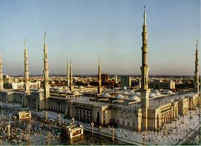

# KNOW ABOUT THE RAMADAN

Ramadan (Arabic: رَمَضَان, romanized: Ramaḍān [ra.ma.dˤaːn], also spelled Ramazan, Ramzan, Ramadhan or Ramathan, is the ninth month of the Islamic calendar,[9] observed by Muslims worldwide as a month of fasting (sawm), prayer, reflection and community.[10] A commemoration of Muhammad's first revelation,[11] the annual observance of Ramadan is regarded as one of the Five Pillars of Islam[12] and lasts twenty-nine to thirty days, from one sighting of the crescent moon to the next.[13][14]
Fasting from sunrise to sunset is fard (obligatory) for all adult Muslims who are not acutely or chronically ill, travelling, elderly, breastfeeding, diabetic, or menstruating.[15] The predawn meal is referred to as suhur, and the nightly feast that breaks the fast is called iftar.[16][17] Although fatwas have been issued declaring that Muslims who live in regions with a midnight sun or polar night should follow the timetable of Mecca,[18] it is common practice to follow the timetable of the closest country in which night can be distinguished from day.[19][20][21]
The spiritual rewards (thawab) of fasting are believed to be multiplied during Ramadan.[22] Accordingly, Muslims refrain not only from food and drink, but also tobacco products, sexual relations, and sinful behavior,[23][24] devoting themselves instead to salat (prayer) and recitation of the Quran.[25][26]
Contents
1 Etymology
2 History
3 Important dates
3.1 Beginning
3.2 Night of Destiny
3.3 Eid
4 Religious practices
4.1 Fasting
4.1.1 Suhoor
4.1.2 Iftar
4.2 Charity
4.3 Nightly prayers
4.4 Recitation of the Quran
5 Cultural practices
6 Observance rates
7 Laws
8 Health effects
9 Crime rates
10 Ramadan in polar regions
11 Ramadan in Earth orbit
12 Employment during Ramadan
Etymology
The word Ramadan derives from the Arabic root R-M-Ḍ (ر-م-ض) "scorching heat",[27] which is the Classical Arabic verb "ramidha (رَمِضَ)" meaning "become intensely hot – become burning; become scorching; be blazing; be glowing".
Ramadan is thought as one of the names of God in Islam by some, and as such it is reported in many hadiths that it is prohibited to say only "Ramadan" in reference to the calendar month and that it is necessary to say "month of Ramadan", as reported in Sunni,[28][29][30][31][32][33][34] Shia[35][36][37][38][39][40] and Zaydi[41] sources.
In the Persian language, the Arabic letter ض (Ḍād) is pronounced as /z/. The Muslim communities in some countries with historical Persian influence, such as Azerbaijan, Iran, India, Pakistan and Turkey, use the word Ramazan or Ramzan. The word Romzan is used in Bangladesh.
History
Chapter 2, Verse 185 in Arabic.
The month of Ramadan is that in which was revealed the Quran; a guidance for mankind, and clear proofs of the guidance, and the criterion (of right and wrong). And whosoever of you is present, let him fast the month, and whosoever of you is sick or on a journey, a number of other days. Allah desires for you ease; He desires not hardship for you; and that you should complete the period, and that you should magnify Allah for having guided you, and that perhaps you may be thankful.[Quran 2:185]
Muslims hold that all scripture was revealed during Ramadan, the scrolls of Abraham, Torah, Psalms, Gospel, and Quran having been handed down on the first, sixth, twelfth, thirteenth (in some sources, eighteenth)[42] and twenty-fourth Ramadans,[year needed] respectively.[43][self-published source] Muhammed is said to have received his first quranic revelation on Laylat al-Qadr, one of five odd-numbered nights that fall during the last ten days of Ramadan.[44]
Although Muslims were first commanded to fast in the second year of Hijra (624 CE),[43] they believe that the practice of fasting is not in fact an innovation of monotheism[45] but rather has always been necessary for believers to attain taqwa (the fear of God).[46][Quran 2:183] They point to the fact that the pre-Islamic pagans of Mecca fasted on the tenth day of Muharram to expiate sin and avoid drought.[47][self-published source] Philip Jenkins argues that the observance of Ramadan fasting grew out of "the strict Lenten discipline of the Syrian Churches," a postulation corroborated by other scholars, including theologian Paul-Gordon Chandler,[48][49] but disputed by some Muslim academics.[50]
Important dates
The first and last dates of Ramadan are determined by the lunar Islamic calendar.[3]
Beginning
Ramadan beginning dates between Gregorian years 1938 and 2038; including an error on the ante-penultimate line. Note that this table is based on an unspecified variant of the Islamic calendar and that, according to local practices, there can be differences of one (or even two) days.
Because the Hilāl, or crescent moon, typically occurs approximately one day after the new moon, Muslims can usually estimate the beginning of Ramadan;[51] however, many[who?] prefer to confirm the opening of Ramadan by direct visual observation of the crescent.[52]
Night of Destiny
Main article: Laylat al-Qadr
Laylat al-Qadr is considered the holiest night of the year.[53][54] It is generally believed to have occurred on an odd-numbered night during the last ten days of Ramadan; the Dawoodi Bohra believe that Laylat al-Qadr was the twenty-third night of Ramadan.[55][56]
Eid
Main articles: Eid al-Fitr and Eid prayers
The holiday of Eid al-Fitr (Arabic:عيد الفطر), which marks the end of Ramadan and the beginning of Shawwal, the next lunar month, is declared after a crescent new moon has been sighted or after completion of thirty days of fasting if no sighting of the moon is possible. Eid celebrates of the return to a more natural disposition (fitra) of eating, drinking, and marital intimacy.[57]
Religious practices
Azim Azimzade. Ramadan of the poor people. 1938
The common practice is to fast from dawn to sunset. The pre-dawn meal before the fast is called the suhur, while the meal at sunset that breaks the fast is called iftar.[58]
Muslims devote more time to prayer and acts of charity, striving to improve their self-discipline, motivated by hadith:[59][60] "When Ramadan arrives, the gates of Paradise are opened and the gates of hell are locked up and devils are put in chains."[61]
Fasting
Main article: Fasting during Ramadan
Ramadan is a time of spiritual reflection, self-improvement, and heightened devotion and worship. Muslims are expected to put more effort into following the teachings of Islam. The fast (sawm) begins at dawn and ends at sunset. In addition to abstaining from eating and drinking during this time, Muslims abstain from sexual relations[3] and sinful speech and behaviour during Ramadan fasting or month. The act of fasting is said to redirect the heart away from worldly activities, its purpose being to cleanse the soul by freeing it from harmful impurities. Muslims believe that Ramadan teaches them to practice self-discipline, self-control,[62] sacrifice, and empathy for those who are less fortunate, thus encouraging actions of generosity and compulsory charity (zakat).[63]
Muslims also believe fasting helps instill compassion for the food-insecure poor.[64]
Exemptions to fasting include travel, menstruation, severe illness, pregnancy, and breastfeeding. However, many Muslims with medical conditions[vague][who?] insist on fasting to satisfy their spiritual needs, although it is not recommended by hadith.[58] Those unable to fast are obligated to make up the missed days later.[65]
Suhoor
Main article: Suhur
Iftar at Sultan Ahmed Mosque in Istanbul, Turkey
Each day, before dawn, Muslims observe a pre-fast meal called the suhoor. After stopping a short time before dawn, Muslims begin the first prayer of the day, Fajr.[66][67]
Iftar
Main article: Iftar
At sunset, families break the fast with the iftar, traditionally opening the meal by eating dates to commemorate Muhammad's practice of breaking the fast with three dates.[68][69] They then adjourn for Maghrib, the fourth of the five required daily prayers, after which the main meal is served.[70]
Social gatherings, many times in buffet style, are frequent at iftar. Traditional dishes are often highlighted, including traditional desserts, particularly those made only during Ramadan.[example needed] Water is usually the beverage of choice, but juice and milk are also often available, as are soft drinks and caffeinated beverages.[71]
In the Middle East, iftar consists of water, juices, dates, salads and appetizers; one or more main dishes; and rich desserts, with dessert considered the most important aspect of the meal.[72] Typical main dishes include lamb stewed with wheat berries, lamb kebabs with grilled vegetables, and roasted chicken served with chickpea-studded rice pilaf. Desserts may include luqaimat, baklava or kunafeh.[73]
Over time, the practice of iftar has involved into banquets that may accommodate hundreds or even thousands of diners.[74] The Sheikh Zayed Grand Mosque in Abu Dhabi, the largest mosque in the UAE, feeds up to thirty thousand people every night.[75] Some twelve thousand people attend iftar at the Imam Reza shrine in Mashhad.[citation needed]
Iftar serving for fasting people in the Imam Reza shrine
Charity
Main articles: Zakāt and Sadaqah
Men praying during Ramadan at the Shrine of Ali or "Blue Mosque" in Mazar-i-Sharif, Afghanistan
Zakāt, often translated as "the poor-rate", is the fixed percentage of income a believer is required to give to the poor; the practice is obligatory as one of the pillars of Islam. Muslims believe that good deeds are rewarded more handsomely during Ramadan than at any other time of the year; consequently, many Muslims donate a larger portion – or even all – of their yearly zakāt during this month.[citation needed]
Nightly prayers
Main article: Tarawih
Tarawih (Arabic: تراويح) are extra nightly prayers performed during the month of Ramadan.
Contrary to popular belief, they are not compulsory.[76]
Recitation of the Quran
Muslims are encouraged to read the entire Quran, which comprises thirty juz' (sections), over the thirty days of Ramadan. Some Muslims incorporate a recitation of one juz' into each of the thirty tarawih sessions observed during the month.[77]
Cultural practices
Main article: Fanous Ramadan
A Kebab seller from Chwakbazar Iftar Market in Old Dhaka. The Chowk Bazaar neighborhood of Old Dhaka is famous for its century old Iftar Bazar.
In some Islamic countries, lights are strung up in public squares and across city streets,[78][79][80] a tradition believed to have originated during the Fatimid Caliphate, where the rule of Caliph al-Mu'izz li-Din Allah was acclaimed by people holding lanterns.[81]
On the island of Java, many believers bathe in holy springs to prepare for fasting, a ritual known as Padusan.[82] The city of Semarang marks the beginning of Ramadan with the Dugderan carnival, which involves parading the Warak ngendog, a horse-dragon hybrid creature allegedly inspired by the Buraq.[83] In the Chinese-influenced capital city of Jakarta, firecrackers are widely used to celebrate Ramadan, although they are officially illegal.[84] Towards the end of Ramadan, most employees receive a one-month bonus known as Tunjangan Hari Raya.[85] Certain kinds of food are especially popular during Ramadan, such as large beef or buffalo in Aceh and snails in Central Java.[86] The iftar meal is announced every evening by striking the bedug, a giant drum, in the mosque.[87]
Common greetings during Ramadan include Ramadan mubarak and Ramadan kareem, which mean (have a) "blessed Ramadan" and "generous Ramadan" respectively.[88]
During Ramadan in the Middle East, a mesaharati beats a drum across a neighbourhood to wake people up to eat the suhoor meal. Similarly in Southeast Asia, the kentongan slit drum is used for the same purpose.
Striking the bedug in Indonesia
Crescent is colourfully decorated and illuminated during Ramadan in Jordan
Ramadan in the Old City of Jerusalem
Fanous Ramadan decorations in Cairo, Egypt
In Gulf countries, children dress in traditional attire and go door-to-door to receive sweets and nuts from neighbours on the 15th night of Ramadan
Observance rates
According to a 2012 Pew Research Centre study, there was widespread Ramadan observance, with a median of 93 percent across the thirty-nine countries and territories studied.[89] Regions with high percentages of fasting among Muslims include Southeast Asia, South Asia, Middle East and North Africa, Horn of Africa and most of Sub-Saharan Africa.[89] Percentages are lower in Central Asia and Southeast Europe.[89]
Laws
In some Muslim countries, eating in public during daylight hours in Ramadan is a crime.[90][91][92] The sale of alcohol becomes prohibited during Ramadan in Egypt.[93] The penalty for publicly eating, drinking or smoking during Ramadan can result in fines or incarceration in the countries of Kuwait,[94][95] Saudi Arabia,[96][97][98] Algeria[99] and Malaysia.[100] In the United Arab Emirates, the punishment is community service.[101]
In some countries, the observance of Ramadan has been restricted. In the USSR, the practice of Ramadan was suppressed by officials.[102][103] In Albania, Ramadan festivities were banned during the communist period.[104] However, many Albanians continued to fast secretly during this period.[105] China is widely reported to have banned Ramadan fasting since 2012 in Xinjiang.[106][107] Those caught fasting by the government could be sent to a "re-education camp".[108]
Some countries impose modified work schedules. In the UAE, employees may work no more than six hours per day and thirty-six hours per week. Qatar, Oman, Bahrain and Kuwait have similar laws.[109]
Health effects
There are various health effects of fasting in Ramadan. Ramadan fasting is considered safe for healthy individuals; it may pose risks for individuals with certain pre-existing conditions. Most Islamic scholars hold that fasting is not required for those who are ill. Additionally, the elderly and pre-pubertal children are exempt from fasting.[110] Pregnant or lactating women are exempt from fasting during Ramadan according to some authorities,[111] while according to other authorities they are exempt only if they fear fasting may harm them or their babies.[110][112][113]
There are some health benefits of Ramadan including increasing insulin sensitivity and reducing insulin resistance.[114] It has also been shown that there is a significant improvement in 10 years coronary heart disease risk score and other cardiovascular risk factors such as lipids profile, systolic blood pressure, weight, BMI and waist circumference in subjects with a previous history of cardiovascular disease.[115] The fasting period is usually associated with modest weight loss, but weight can return afterwards.[116]
Ramadan fasting, as a time-restricted eating habit that inverts the normal human day-night-routine for the observants, can have deleterious health effects on sleep patterns and the general health. Fasting in Ramadan has been shown to alter the sleep patterns[117] and the associated hormone production.
In Islam, pregnant women and those who are breasfeeding are exempt from fasting.[110] Fasting can be hazardous for pregnant women as it is associated with risks of inducing labour and causing gestational diabetes, although it does not appear to affect the child's weight. It is permissible to not fast if it threatens the woman's or the child's lives, however, in many instances pregnant women are normal before development of complications.[118][119][120][121][122] If a mother fasts during pregnancy, the resulting child may have significantly lower intelligence, lower cognitive capability and be at increased risk for several chronic diseases, e.g. Type 2 diabetes.[123] Many Islamic scholars argue it is obligatory on a pregnant woman not to fast if a doctor recommends against it.[124]
In many cultures, it is associated with heavy food and water intake during Suhur and Iftar times, which may do more harm than good.[citation needed] Ramadan fasting is safe for healthy people provided that overall food and water intake is adequate but those with medical conditions should seek medical advice if they encounter health problems before or during fasting.[125]
The education departments of Berlin and the United Kingdom have tried to discourage students from fasting during Ramadan, as they claim that not eating or drinking can lead to concentration problems and bad grades.[126][127]
A review of the literature by an Iranian group suggested fasting during Ramadan might produce renal injury in patients with moderate (GFR <60 ml/min) or severe kidney disease but was not injurious to renal transplant patients with good function or most stone-forming patients.[128]
Conversion of Hijri years 1343 to 1500 to the Gregorian calendar, with first days of al-Muharram (brown), Ramadan (grey) and Shawwal (black) bolded, and Eid al-Adha dotted – in the SVG file, hover over a spot to show its dates and a line to show the month
Crime rates
The correlation of Ramadan with crime rates is mixed: some statistics show that crime rates drop during Ramadan, while others show that it increases. Decreases in crime rates have been reported by the police in some cities in Turkey (Istanbul[129] and Konya[130]) and the Eastern province of Saudi Arabia.[131] A 2005 study found that there was a decrease in assault, robbery and alcohol-related crimes during Ramadan in Saudi Arabia, but only the decrease in alcohol-related crimes was statistically significant.[132] Increases in crime rates during Ramadan have been reported in Turkey,[133] Jakarta,[134][135][136] parts of Algeria,[137] Yemen[138] and Egypt.[139]
Various mechanisms have been proposed for the effect of Ramadan on crime:
An Iranian cleric argues that fasting during Ramadan makes people less likely to commit crimes due to spiritual reasons.[140] Gamal al-Banna argues that fasting can stress people out, which can make them more likely to commit crimes. He criticized Muslims who commit crimes while fasting during Ramadan as "fake and superficial".[139]
Police in Saudi Arabia attributed a drop in crime rates to the "spiritual mood prevalent in the country".[131]
In Jakarta, Indonesia, police say that the traffic due to 7 million people leaving the city to celebrate Eid al-Fitr results in an increase in street crime. As a result, police deploy an additional 7,500 personnel.[136]
During Ramadan, millions of pilgrims enter Saudi Arabia to visit Mecca. According to the Yemen Times, such pilgrims are usually charitable, and consequently smugglers traffic children in from Yemen to beg on the streets of Saudi Arabia.[138]
Ramadan in polar regions
The length of the dawn to sunset time varies in different parts of the world according to summer or winter solstices of the Sun. Most Muslims fast for eleven to sixteen hours during Ramadan. However, in polar regions, the period between dawn and sunset may exceed twenty-two hours in summer. For example, in 2014, Muslims in Reykjavik, Iceland, and Trondheim, Norway, fasted almost twenty-two hours, while Muslims in Sydney, Australia, fasted for only about eleven hours. In areas characterized by continuous night or day, some Muslims follow the fasting schedule observed in the nearest city that experiences sunrise and sunset, while others follow Mecca time.[19][20][21]
Ramadan in Earth orbit
Muslim astronauts in space schedule religious practices around the time zone of their last location on Earth. For example, this means an astronaut from Malaysia launching from the Kennedy Space Center in Florida would center their fast according to sunrise and sunset in Eastern Standard Time. This includes times for daily prayers, as well as sunset and sunrise for Ramadan.[141][142]
Employment during Ramadan
Muslims continue to work during Ramadan;[143][144] however, in some Islamic countries, such as Oman and Lebanon, working hours are shortened.[145][146] It is often recommended that working Muslims inform their employers if they are fasting, given the potential for the observance to impact performance at work.[147] The extent to which Ramadan observers are protected by religious accommodation varies by country. Policies putting them at a disadvantage compared to other employees have been met with discrimination claims in the United Kingdom and the United States.[148][149][150] An Arab News article reported that Saudi Arabian businesses were unhappy with shorter working hours during Ramadan, some reporting a decline in productivity of 35 to 50%.[151] The Saudi businesses proposed awarding salary bonuses in order to incentivize longer hours.[152] Despite the reduction in productivity, merchants can enjoy higher profit margins in Ramadan due to increase in demand.[153]